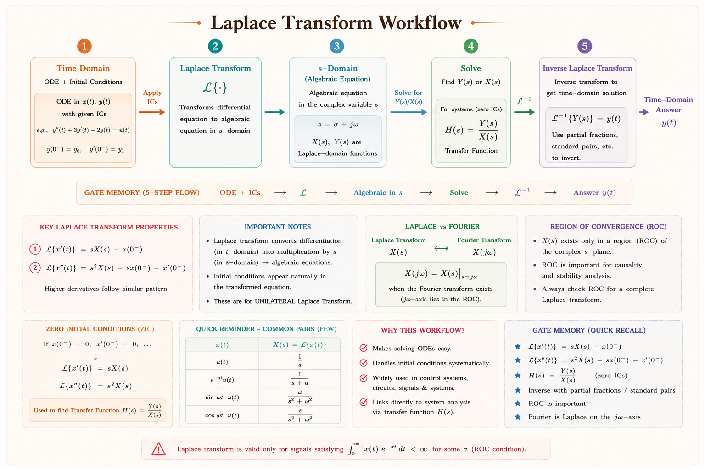
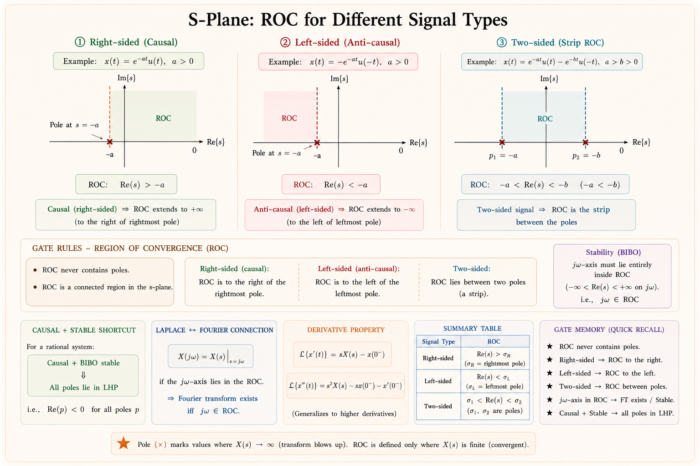
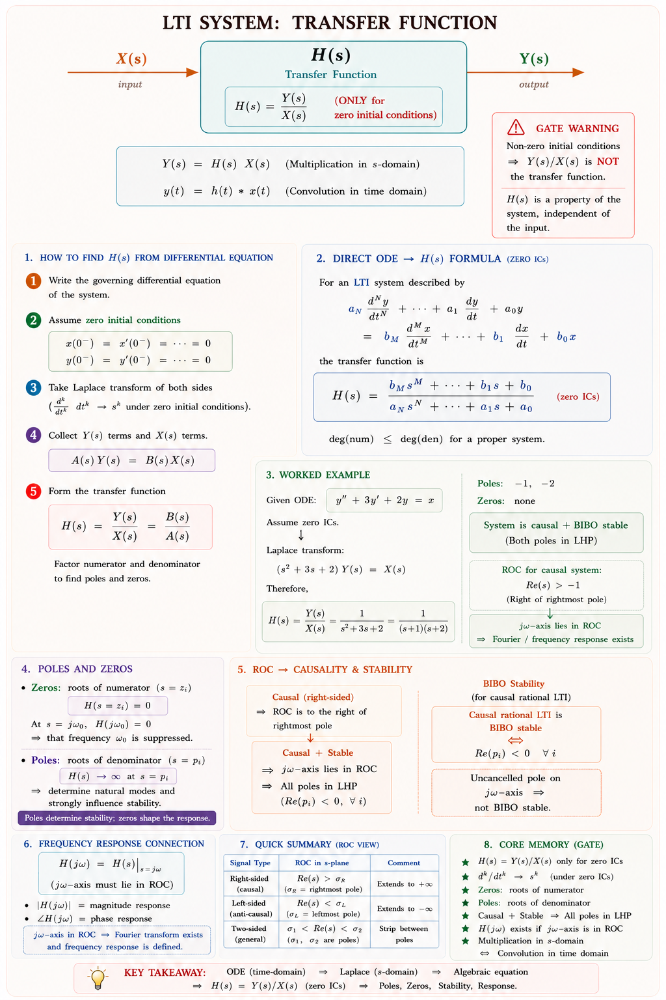
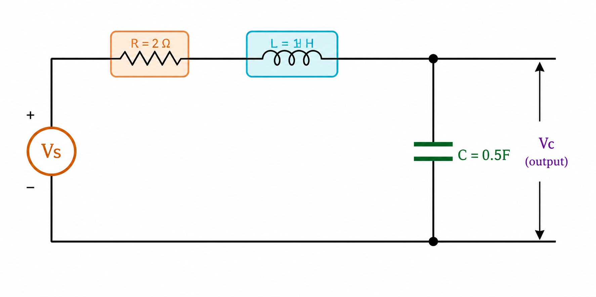
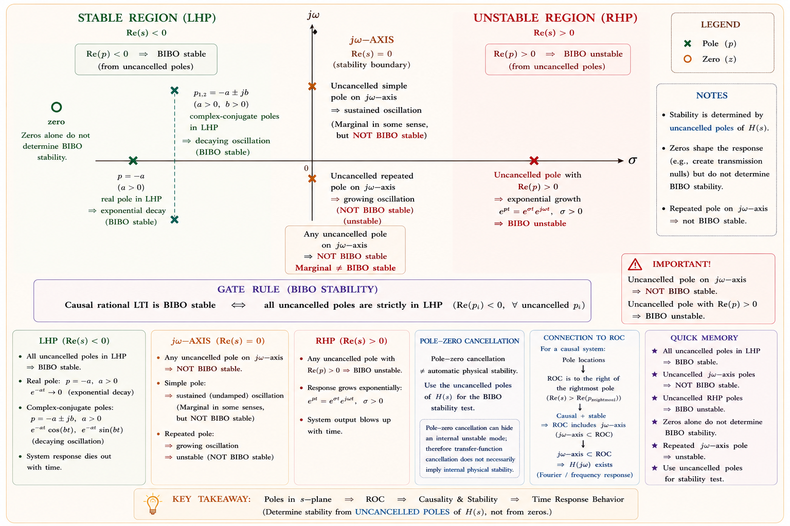

From the bilateral definition to ROC, poles, zeros, stability, and transfer functions — the complete GATE & IES treatment with intuition-first derivations, inline SVG diagrams, and solved examples from standard textbooks.
Imagine you are an electrical engineer designing a control system for a power plant. You write the governing differential equation — it is perfectly correct — but solving it analytically is nightmarish the moment the system has more than two energy-storage elements. The Laplace transform converts that differential equation into an algebraic equation in the complex frequency domain, where multiplication and division replace differentiation and integration.[1]
Every real-world system — RLC circuit, motor drive, feedback controller, filter — is governed by a linear ordinary differential equation. Laplace transforms these into simple algebraic expressions, find the solution in \(s\)-domain, then invert back to time domain. This is the fundamental workflow of linear system analysis.
Pierre-Simon Laplace introduced this transform in the late 18th century while working on probability theory. Engineers adopted it in the early 20th century when Heaviside used operational calculus (a pre-cursor) to solve telegraph equations. Today, the Laplace transform is the backbone of control system design, circuit analysis, signal processing, and communication theory.[1,2]

Fig. 1.1 — The three-step Laplace workflow: transform to s-domain, solve algebraically, invert back.
The bilateral Laplace transform is the most general form, integrating over all time from \(-\infty\) to \(+\infty\). It is used when the signal exists for both negative and positive time — for example, in signal processing and when analysing non-causal systems.[1]
Here \(s = \sigma + j\omega\) is the complex frequency variable. The real part \(\sigma\) is the exponential damping rate, and \(j\omega\) is the angular frequency (purely imaginary axis is the Fourier transform axis).
Think of \(e^{-st} = e^{-\sigma t} \cdot e^{-j\omega t}\). The factor \(e^{-\sigma t}\) is a damping envelope — it forces even growing signals to converge if \(\sigma\) is large enough. The factor \(e^{-j\omega t}\) is a sinusoidal kernel (same as Fourier). The Laplace transform extends the Fourier analysis to the entire complex plane.
For causal systems — systems where the output depends only on present and past inputs — signals are zero for \(t < 0\). The unilateral Laplace transform restricts integration to \(0^-\) to \(+\infty\), allowing initial conditions to be incorporated directly.[1,3]
The lower limit \(0^-\) means "just before zero." This captures any impulse \(\delta(t)\) located at \(t=0\). If we used \(0^+\), we would miss the impulse contribution. This is critical when dealing with initial conditions and impulsive inputs.[1]
| Feature | Bilateral LT | Unilateral LT |
|---|---|---|
| Integration limits | \(-\infty\) to \(+\infty\) | \(0^-\) to \(+\infty\) |
| Signal type | All signals (causal & non-causal) | Causal signals only |
| ROC | A vertical strip in s-plane | A right half-plane \(\sigma > \sigma_0\) |
| Initial conditions | Not naturally handled | Built-in via differentiation property |
| GATE focus | ROC problems, stability | Circuit analysis, IVT, FVT |
| Inverse formula | Bromwich contour integral | Partial fractions (practical) |
| Connection to Fourier | \(X(j\omega)\) when \(\sigma=0\) and ROC includes \(j\omega\)-axis | Same, for stable causal systems |
Theoretically, the inverse is given by the Bromwich contour integral (a complex line integral). In practice, engineers use partial fraction decomposition and a table of known pairs.[1]
| Signal \(x(t)\) | Transform \(X(s)\) | ROC |
|---|---|---|
| \(\delta(t)\) | \(1\) | Entire s-plane |
| \(u(t)\) | \(\dfrac{1}{s}\) | \(\text{Re}(s) > 0\) |
| \(e^{-at}u(t),\ a>0\) | \(\dfrac{1}{s+a}\) | \(\text{Re}(s) > -a\) |
| \(e^{-at}u(-t),\ a>0\) | \(\dfrac{-1}{s+a}\) | \(\text{Re}(s) < -a\) |
| \(t\,u(t)\) | \(\dfrac{1}{s^2}\) | \(\text{Re}(s) > 0\) |
| \(t^n e^{-at}u(t)\) | \(\dfrac{n!}{(s+a)^{n+1}}\) | \(\text{Re}(s) > -a\) |
| \(\sin(\omega_0 t)\,u(t)\) | \(\dfrac{\omega_0}{s^2+\omega_0^2}\) | \(\text{Re}(s) > 0\) |
| \(\cos(\omega_0 t)\,u(t)\) | \(\dfrac{s}{s^2+\omega_0^2}\) | \(\text{Re}(s) > 0\) |
| \(e^{-at}\sin(\omega_0 t)\,u(t)\) | \(\dfrac{\omega_0}{(s+a)^2+\omega_0^2}\) | \(\text{Re}(s) > -a\) |
The Laplace transform integral \(\int_{-\infty}^{+\infty} x(t)\,e^{-st}\,dt\) does not converge for all values of \(s\). The Region of Convergence (ROC) is the set of all complex values of \(s\) for which the integral converges absolutely, i.e., gives a finite value.[1]
The same algebraic expression \(X(s)\) can correspond to different time-domain signals depending on the ROC. Without specifying the ROC, the inverse Laplace transform is not unique. GATE consistently tests this: two different signals can share the same \(X(s)\) formula but different ROCs — giving completely different \(x(t)\).

Fig. 3.1 — ROC in the s-plane for three signal types. Poles (×) bound the ROC. ROC never contains poles. [Ref: Oppenheim & Willsky, Ch.9]
Let \(X(s) = \dfrac{1}{s+2}\). This could arise from:
• \(x_1(t) = e^{-2t}u(t)\) → ROC: \(\text{Re}(s) > -2\) (right-sided, causal)
• \(x_2(t) = -e^{-2t}u(-t)\) → ROC: \(\text{Re}(s) < -2\) (left-sided, anti-causal)
Same algebraic \(X(s)\), completely different time functions! The ROC is what distinguishes
them.
These properties make the Laplace transform immensely powerful in engineering analysis. Understanding each property intuitively — not just its formula — is how GATE toppers solve problems quickly.[1,2]
| Property | Time Domain | s-Domain | ROC |
|---|---|---|---|
| Linearity | \(a\,x_1(t)+b\,x_2(t)\) | \(a\,X_1(s)+b\,X_2(s)\) | At least \(R_1 \cap R_2\) |
| Time Shifting | \(x(t-t_0)\) | \(e^{-st_0}X(s)\) | Same as \(X(s)\) |
| Frequency Shifting | \(e^{s_0 t}x(t)\) | \(X(s-s_0)\) | Shifted by \(\text{Re}(s_0)\) |
| Time Scaling | \(x(at),\ a>0\) | \(\frac{1}{a}X\!\left(\frac{s}{a}\right)\) | Scaled |
| Differentiation | \(\frac{dx}{dt}\) | \(sX(s) - x(0^-)\) | Same or larger |
| Integration | \(\int_{-\infty}^t x(\tau)d\tau\) | \(\frac{X(s)}{s}+\frac{x^{(-1)}(0^-)}{s}\) | Intersect with \(\text{Re}(s)>0\) |
| Convolution | \(x_1(t)*x_2(t)\) | \(X_1(s)\cdot X_2(s)\) | At least \(R_1 \cap R_2\) |
| Multiplication | \(x_1(t)\cdot x_2(t)\) | \(\frac{1}{2\pi j}X_1(s)*X_2(s)\) | \(R_1+R_2\) |
| Time Reversal | \(x(-t)\) | \(X(-s)\) | Reflected ROC |
| Conjugation | \(x^*(t)\) | \(X^*(s^*)\) | Same |
This is the property that makes the Laplace transform so powerful for solving differential equations. For the unilateral LT with initial conditions:[1]
For a second-order system (most common in GATE):
When we differentiate \(e^{st}\), we get \(s\,e^{st}\). So in the "s-domain world," differentiation is just multiplication by \(s\). Integration is division by \(s\). This is the core reason engineers love working in the s-domain — calculus becomes algebra.
These two theorems allow us to find the initial value \(x(0^+)\) and final (steady-state) value \(x(\infty)\) of a signal directly from its Laplace transform, without performing the inverse LT. They are extremely useful in control system analysis and are heavily tested in GATE.[1,3]
Validity conditions: \(x(t)\) must be causal (unilateral LT context), and the limit must exist. If \(X(s)\) is an improper rational function (degree of numerator ≥ degree of denominator), IVT gives incorrect results — a common GATE trap!
Do NOT apply IVT if \(X(s) = \frac{s^2+3s+1}{s+2}\) — the numerator degree (2) ≥ denominator degree (1). This is an improper fraction. First perform polynomial long division, then apply IVT to the proper fractional part. GATE has tested this distinction multiple times.
Validity conditions (very important): FVT is valid only if all poles of \(sX(s)\) are in the left half of the s-plane (i.e., the system is stable and \(x(t)\) actually reaches a steady-state). If there are poles on the \(j\omega\)-axis or in the right half-plane, FVT gives a meaningless result.
If \(X(s) = \frac{1}{s^2+4}\), then \(sX(s) = \frac{s}{s^2+4}\) has poles at \(s = \pm j2\) (on the \(j\omega\)-axis). This corresponds to a sinusoid \(\sin(2t)\) which never settles. Applying FVT would incorrectly give 0. The correct answer is that the final value does not exist. This is among the most frequently tested GATE trap.
| Aspect | Initial Value Theorem | Final Value Theorem |
|---|---|---|
| Formula | \(\lim_{s\to\infty} sX(s)\) | \(\lim_{s\to 0} sX(s)\) |
| What it finds | \(x(0^+)\) — initial value | \(x(\infty)\) — steady-state |
| Must be causal? | Yes | Yes |
| Stability needed? | No | Yes — all poles of sX(s) in LHP |
| Improper X(s)? | Cannot apply directly | Not a concern typically |
| Sinusoidal input? | Can handle | Cannot apply — no steady-state |
| Engineering use | Check initial capacitor voltage, inductor current | Check steady-state output of control system |
Step 1 — Compute \(sX(s)\):
Step 2 — Check IVT validity: \(X(s)\) is proper (numerator degree 1 < denominator degree 2). ✓ IVT applicable.
Step 3 — Apply IVT:
Step 4 — Check FVT validity: Poles of \(sX(s)\) — factor denominator: \(s^2+3s+2 = (s+1)(s+2)\). Poles at \(s=-1\) and \(s=-2\), both in LHP. ✓ FVT applicable.
Step 5 — Apply FVT:
The signal \(x(t)\) starts at 3 and decays to 0. This makes physical sense — the system has poles at −1 and −2 (both decaying exponentials), so the output returns to zero as \(t\to\infty\).
The transfer function \(H(s)\) is the Laplace transform of the system's impulse response \(h(t)\), assuming zero initial conditions. Equivalently, it is the ratio of output transform to input transform:[1,2]
For a general LTI system described by the differential equation:

Fig. 6.1 — LTI system block diagram. Convolution in time ↔ multiplication in s-domain.

Fig. 6.2 — Series RLC circuit for transfer function derivation.
KVL in s-domain (zero initial conditions):
Output voltage across capacitor: \(V_C(s) = I(s)\cdot\dfrac{1}{sC} = \dfrac{2\,I(s)}{s}\)
Poles: \(s = \dfrac{-2 \pm \sqrt{4-8}}{2} = -1 \pm j1\) — complex conjugate poles in LHP → stable underdamped system.
When \(X(s)\) is written as a rational function, we can factor both numerator and denominator:
where \(z_i\) are called zeros (values of \(s\) that make \(X(s)=0\)) and \(p_i\) are called poles (values of \(s\) that make \(X(s)\to\infty\)).[1,2]
| Pole Location | Time-Domain Behaviour | System Type |
|---|---|---|
| Left Half-Plane (LHP) \(\text{Re}(p) < 0\) |
Decaying exponential / sinusoid → 0 | Stable |
| Right Half-Plane (RHP) \(\text{Re}(p) > 0\) |
Growing exponential / sinusoid → ∞ | Unstable |
| Origin \(s=0\) (simple) |
Constant (integrator) | Marginally stable |
| \(j\omega\)-axis \(\text{Re}(p)=0\) (simple) |
Pure sinusoid — persists forever | Marginally stable |
| \(j\omega\)-axis (repeated) |
Growing sinusoid → ∞ | Unstable |
| Real, negative \(p = -a,\ a>0\) |
Decaying: \(e^{-at}\) | Stable |
| Complex conjugate in LHP \(p = -a\pm j\omega_d\) |
Decaying sinusoid: \(e^{-at}\sin(\omega_d t)\) | Stable (underdamped) |

Fig. 7.1 — Pole-zero plot showing stability regions. LHP poles → stable. RHP poles → unstable. Poles on jω-axis → marginally stable. [Ref: Oppenheim & Willsky, Ch.9]
Poles determine the natural frequencies of the system — they dictate how the system responds on its own (free response). Zeros shape the forced response — they can enhance or attenuate certain frequency components of the output. For stability, only poles matter; zeros never cause instability in themselves.
A system is Bounded-Input Bounded-Output (BIBO) stable if and only if every bounded input produces a bounded output. In the Laplace domain, this requires that the impulse response \(h(t)\) be absolutely integrable:[1,2]
For a causal LTI system with rational transfer function: BIBO stable iff all poles of H(s) lie strictly in the Left Half-Plane (LHP), i.e., \(\text{Re}(p_i) < 0\) for all \(i\).
A causal LTI system is BIBO stable if and only if the ROC of \(H(s)\) includes the entire imaginary axis \(j\omega\). Equivalently, the Fourier transform of \(h(t)\) — i.e., \(H(j\omega)\) — exists. This is because the \(j\omega\)-axis lies within the ROC only when all poles are in the open LHP.
| Pole Configuration | ROC Includes jω-axis? | BIBO Stability | Free Response |
|---|---|---|---|
| All poles strictly in LHP | Yes ✓ | Stable | Decays to zero |
| Any pole in RHP | No ✗ | Unstable | Grows without bound |
| Simple poles on jω-axis, none in RHP | Boundary | Marginally stable | Sustained oscillation |
| Repeated poles on jω-axis | No ✗ | Unstable | Grows (polynomial × sinusoid) |
Without explicitly finding poles, the Routh-Hurwitz criterion determines stability from the coefficients of the characteristic polynomial \(A(s)\). For \(A(s) = a_n s^n + \cdots + a_1 s + a_0\):[3]
All coefficients of \(A(s)\) must be positive and non-zero. If any coefficient is negative, zero, or missing, the system is immediately unstable — no Routh table needed. This single check eliminates many GATE options instantly.
Step 1 — Quick check: All coefficients (1, 2, 3, 4) are positive. Necessary condition ✓. But not sufficient for order ≥ 3.
Step 2 — Routh Array:
Step 3 — Count sign changes in first column: {1, 2, 1, 4} → all positive, zero sign changes.
Conclusion: System is BIBO stable. Number of RHP poles = 0.
Step 1 — Partial fraction expansion:
Step 2 — Find A and B:
Step 3 — Inverse LT:
Both poles at −1 and −3 are in the LHP → the signal decays to zero as \(t\to\infty\).
Step 1 — Transform each part separately:
Step 2 — Combine (linearity):
Step 3 — ROC is intersection:
This is a two-sided signal with a strip ROC. The \(j\omega\)-axis (Re(s)=0) lies within the ROC, so the Fourier transform \(X(j\omega)\) exists. The system is BIBO stable in the sense that the bilateral LT has ROC including the \(j\omega\)-axis.
Step 1 — Take unilateral LT (include initial condition):
Step 2 — Solve for Y(s):
Step 3 — Inverse LT:
The solution contains a forced response \(2/3\) (steady-state) and a natural response \(\frac{1}{3}e^{-3t}\) (dies out). At \(t=0^+\): \(y(0^+) = 2/3+1/3 = 1\) ✓ (consistent with initial condition).
Question: The ROC of the Laplace transform of \(x(t) = e^{-t}u(t) - e^{-2t}u(t)\) is:
Explanation: Both \(e^{-t}u(t)\) and \(e^{-2t}u(t)\) are right-sided (causal). Their individual ROCs are \(\text{Re}(s) > -1\) and \(\text{Re}(s) > -2\). The combined ROC is the intersection, which is the more restrictive: \(\text{Re}(s) > -1\). The combined \(X(s) = \frac{1}{s+1} - \frac{1}{s+2} = \frac{1}{(s+1)(s+2)}\), and since both signals are right-sided, the ROC is \(\text{Re}(s) > -1\) (to the right of the rightmost pole).
Question: If \(X(s) = \dfrac{4}{s(s^2+4)}\), then \(x(\infty)\) using the Final Value Theorem is:
Explanation: \(sX(s) = \frac{4}{s^2+4}\) has poles at \(s = \pm j2\), which lie on the \(j\omega\)-axis. Since the poles of \(sX(s)\) are not strictly in the LHP, the FVT is not applicable. The signal \(x(t)\) would contain a sinusoidal component \(\sin(2t)\) that never settles. This is a classic GATE trap — even though \(s=0\) is not a pole of \(sX(s)\), the imaginary-axis poles invalidate FVT.
Question: A causal LTI system has poles at \(s=-1, -3\) and zeros at \(s=0, -2\), with gain constant \(K=6\). The transfer function is:
Explanation: The pole-zero form directly gives: \(H(s) = K\frac{(s-z_1)(s-z_2)}{(s-p_1)(s-p_2)} = 6\cdot\frac{(s-0)(s-(-2))}{(s-(-1))(s-(-3))} = \frac{6s(s+2)}{(s+1)(s+3)}\). All poles in LHP → stable causal system.
Question: The initial value \(x(0^+)\) for \(X(s) = \dfrac{s^2+s+1}{s+1}\) is:
Explanation: \(X(s) = \frac{s^2+s+1}{s+1}\) is improper. Long division: \(\frac{s^2+s+1}{s+1} = s + \frac{1}{s+1}\). Now \(\lim_{s\to\infty} sX(s) = \lim_{s\to\infty} s\!\left(s+\frac{1}{s+1}\right) = \infty\). The \(\delta'(t)\) and \(\delta(t)\) terms indicate an impulsive-type signal. For the purely proper part: \(\mathcal{L}^{-1}\!\{1/(s+1)\}\) contributes \(e^{-t}u(t)\), giving initial value 1. The improper part contributes singular terms at \(t=0\).
Seeing \(X(s) = 1/(s+2)\) and immediately writing \(x(t) = e^{-2t}u(t)\) without checking the ROC. Could be \(-e^{-2t}u(-t)\) if the system is anti-causal. Always specify the ROC.
Applying \(\lim_{s\to 0} sX(s)\) when \(sX(s)\) has RHP or \(j\omega\)-axis poles. The system doesn't reach a steady state; FVT gives a meaningless number. Always check pole locations of \(sX(s)\) first.
For circuits and control (initial conditions known), use unilateral LT. For ROC and signal analysis problems involving non-causal signals, use bilateral LT. Mixing them leads to wrong ROC specifications.
When two signals with different ROCs are added, the ROC of the sum is at least the intersection — but can be larger if pole-zero cancellation occurs at a boundary. This is rare but tested in GATE.
| Topic | Key Formula / Rule | GATE Priority |
|---|---|---|
| Bilateral LT | \(\int_{-\infty}^{\infty} x(t)e^{-st}dt\) | HIGH |
| Unilateral LT | \(\int_{0^-}^{\infty} x(t)e^{-st}dt\) | HIGH |
| ROC — right-sided | Re(s) > rightmost pole real part | HIGH |
| ROC — left-sided | Re(s) < leftmost pole real part | HIGH |
| Differentiation | \(\mathcal{L}\{x'\} = sX(s) - x(0^-)\) | HIGH |
| Convolution | \(x_1*x_2 \leftrightarrow X_1(s)X_2(s)\) | HIGH |
| IVT | \(x(0^+) = \lim_{s\to\infty} sX(s)\) — proper X(s) only | HIGH |
| FVT | \(x(\infty) = \lim_{s\to 0} sX(s)\) — poles of sX(s) in LHP | HIGH |
| Transfer function | \(H(s) = Y(s)/X(s)\) at zero ICs | HIGH |
| Stability | All poles strictly in LHP ↔ BIBO stable | HIGH |
| Marginal stability | Simple poles on jω-axis, none in RHP | MEDIUM |
| Pole-zero form | \(H(s) = K\frac{\prod(s-z_i)}{\prod(s-p_j)}\) | MEDIUM |
| Impedance (s-domain) | \(Z_L=sL,\ Z_C=1/(sC),\ Z_R=R\) | MEDIUM |
In power systems, the Laplace transform is used to analyse transient behaviour of generators, transformers, and motors after a fault. Control engineers use transfer functions daily to design voltage regulators, speed controllers, and protection relays. In the design of Butterworth and Chebyshev filters (used in audio, instrumentation, and communications), prototype transfer functions are specified in the s-domain, then mapped to digital domain via bilinear transform.
Common PSU Interview Questions:
Type your doubt about Laplace Transform, ROC, stability, or any concept in this chapter. Aarova AI will answer like a GATE faculty member.
Bilateral integrates \(-\infty\) to \(\infty\) — for all signals. Unilateral from \(0^-\) — for causal systems with initial conditions. Same formula, different limits. Unilateral handles ICs naturally.
ROC = set of s where integral converges. Cannot contain poles. Right-sided → right half-plane. Left-sided → left half-plane. Two-sided → vertical strip. Finite duration → entire s-plane.
IVT: \(x(0^+) = \lim_{s\to\infty} sX(s)\) — needs proper X(s). FVT: \(x(\infty) = \lim_{s\to 0} sX(s)\) — needs all poles of sX(s) in LHP. Never apply FVT to oscillatory or unstable systems.
\(H(s) = Y(s)/X(s)\) at zero ICs. Equals Laplace of impulse response. Characterises system completely. Poles determine stability. Zeros shape frequency response.
BIBO stable iff all poles in LHP. Marginal: simple poles on jω-axis. Unstable: any RHP pole or repeated jω-axis pole. FVT applicable only to stable systems. ROC includes jω-axis ↔ stable.
Poles dictate natural response modes: LHP → decay, RHP → grow. Zeros shape but don't cause instability. RHP zeros → non-minimum phase. Complex poles → oscillatory response with damping.
Z-Transform and Discrete-Time System Analysis — definition, ROC for sequences, properties, inverse Z-transform via partial fractions and power series, transfer function of discrete systems, stability via pole locations, and GATE-focused solved problems.
All technical content is derived from the following standard textbooks. All explanations, derivations, diagrams and examples are original to Aarova AI.